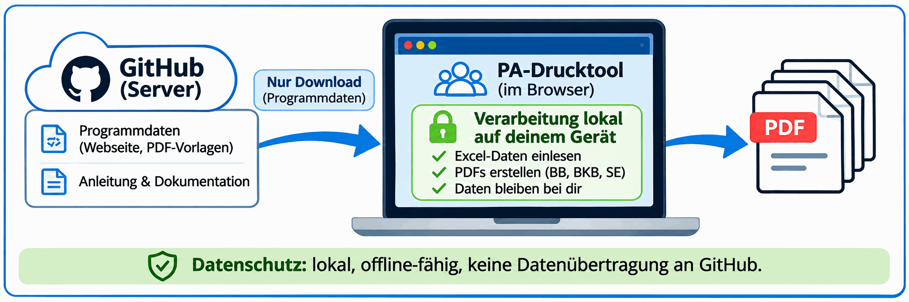

Quellcode einsehen
Praxisberater-Tools enthält das PA-Drucktool und den neuen EP Generator. Der EP-Quellcode liegt in ep-core.js und ep-app.js; der Algorithmus für IDs und grüne Fremdeinschätzung arbeitet ohne externe Dienste.
Aktuelles Schaubild zur lokalen Verarbeitung · Alle Originalvorlagen
Die gesamte Web-App liegt offen im Ordner: app.js, pdf-engine.js, config.js, index.html, style.css klassenverbund.js, saxsvs-import.js, access.js, tool-nav.js und excel-anleitung.html.
Die ZIP-Datei enthält sämtliche Quelldateien. Der Quellcode ist ohne Build-Schritt lesbar. Der Quellcode kann direkt hier im Browser eingesehen werden.
Verwendete Bibliotheken
JSZip – zum lokalen Lesen von XLSX und Schreiben der Ausgabe-ZIP (MIT); pdf-lib – zum lokalen Erstellen der PDFs (MIT). Beide Bibliotheken liegen im Ordner js/. Lizenztexte: JSZip und pdf-lib.
Projektlizenz
Der Code ist zur transparenten Einsicht für Kolleginnen und Kollegen verfügbar. Die Bereitstellung ist keine automatische Freigabe zur Weiterverbreitung.
Stand
v1.6.5 · 15.11.2026: Klassenverbund mit automatischer Beobachterzuordnung, Einzeldruck, Excel- und SaxSVS-Import, SE-Durchstreichungen, automatische BKB-Schriftverkleinerung bei langen Aufgabenlisten, lokale PDF-/ZIP-Erstellung. Die Quellcode-Dateien werden vom Webserver geladen; Schülerdaten werden im Browser verarbeitet. Hinweise und Grenzen stehen in ARCHITEKTUR.md.